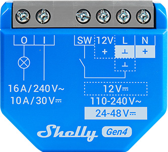
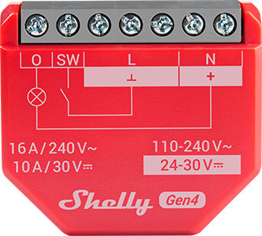
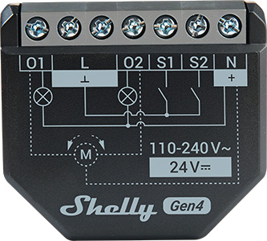

Guide · Devices
Shelly relay with Home Assistant: setup, models and gotchas (2026)
A Shelly relay is one of the few smart switches that Home Assistant can drive without a vendor cloud in the path. The Shelly integration is part of Home Assistant core, so there is nothing to install from HACS, no add-on to keep running and no Shelly account to create. Point the relay at your network, let Home Assistant discover it, and it becomes a local switch with push updates.
The short answer: use the built-in Shelly integration, not Matter, if you want metering entities and instant state changes. Buy the Shelly 1 Gen4 for a plain dry-contact switch, the 1PM Gen4 when you want to measure what the load draws, and the 2PM Gen4 for two circuits or one blind. All of them need a neutral wire at the box.

How the integration actually works
Home Assistant's Shelly documentation is blunt about the architecture: "Integration is communicating directly with the device; cloud connection is not needed." The relay and Home Assistant talk over your LAN. Updates are pushed, not polled — the documentation says devices push changes to Home Assistant for all main functions — which is why a Shelly switch feels instant in an automation while a cloud-bridged device often lags a second or two.
One integration covers every generation. Gen1, Gen2, Gen3 and Gen4 hardware all work with the same Shelly integration, and Shelly's own firmware documentation calls its relays "compatible with Matter" as well. That gives you a choice: pair over Matter to a Thread or Wi-Fi Matter controller, or use the Shelly integration. For a Home Assistant household the integration is usually the better fit, because the Matter path exposes a narrower set of entities than the native one.
Adding a relay to Home Assistant
- Wire the relay and power it up. It broadcasts its presence on the local network within a few seconds of booting.
- Open Home Assistant and go to Settings › Devices & services. Under Discovered you should see the relay listed. Select it and confirm.
- If discovery misses it — separate VLAN, mDNS blocked, static-only network — choose Add integration, search for Shelly, and enter the device's hostname or IP address and its port.
- Name the entity and assign it to an area. Repeat for each relay; there is no per-model integration to install.
Gen1 hardware is the exception. Those devices use the CoIoT protocol, and it has to be switched on in the relay's own web interface: Internet & Security › ADVANCED – DEVELOPER SETTINGS › Enable CoIoT. Set the CoIoT peer to unicast, enter the Home Assistant server's IP address and UDP port 5683, save, and restart the device by hand. Battery-powered Gen1 devices will not report state without this. If push updates never arrive, Home Assistant raises a repair issue rather than silently showing stale values.
Gen2 and newer use the RPC protocol and need no extra configuration by default. Battery devices are the exception there too: they may need Settings › Connectivity › Outbound WebSocket pointed at ws://HA_IP:8123/api/shelly/ws, or the wss:// form when Home Assistant is behind TLS.
Which Shelly relay to buy
The four models below cover most houses. Shelly publishes full specifications in its knowledge base; the table is built from those pages, not from a bench test.
| Model | What it is | Key numbers |
|---|---|---|
| Shelly 1 Gen4 | Single potential-free (dry) contact, no metering. Model S4SW-001X16EU. | 110-240 V~ / 24-48 V⎓ / 12 V⎓, under 1 W standby; neutral required |
| Shelly 1PM Gen4 | Same footprint, one channel with power measurement. 37 × 42 × 16 mm, 27 g. | 110-240 V~ / 24-30 V⎓, under 1 W; terminals 0.5-4 mm² (20-11 AWG) |
| Shelly 2PM Gen4 | Two channels or one cover output, with metering and Venetian blind support. 37 × 42 × 16 mm, 30 g. | 110-240 V~ / 24 VDC ±10%, under 1.4 W; 10 A per channel, 16 A total, 18 A peak |
| Shelly Pro 1 | DIN-rail unit for panel installs, Gen2 firmware, Ethernet plus Wi-Fi. | Potential-free contacts; runs standalone on the local network |
Sources: Shelly Knowledge Base pages for the Shelly 1 Gen4, Shelly 1PM Gen4, Shelly 2PM Gen4 and Shelly Pro 1.
Shelly 1 Gen4: the dry-contact workhorse
Dry contacts are the reason to pick this one over a metering model. Because the output is potential-free, it can switch something that isn't mains lighting: a garage door opener's control input, a boiler's thermostat loop, a gate motor, a low-voltage circuit. Shelly's knowledge base describes it as a "small form factor smart switch with potential-free contacts" and cites 16 A switching current, with a B or C curve breaker rated at 16 A and at least 6 kA interrupting capacity to EN60898-1.
That same page also lists Wi-Fi, Zigbee and Bluetooth in the radio section, and the wireless MCU is shared with the rest of the Gen4 line. Check the Shelly 1 Gen4 on Amazon. One caveat about the spec sheet: the "main features" block on that page carries boilerplate about monitoring humidity and temperature, which is wrong for a relay. Ignore it.

Shelly 1PM Gen4: metering on one circuit
If you want the washer, the dryer or a heat pump to show up in Home Assistant's energy dashboard, this is the part. It measures the load and reports it through the same integration, so no separate clamp meter is needed. Shelly lists it at 37 × 42 × 16 mm and 27 g in a plastic shell, with terminals that take 0.5-4 mm² (20-11 AWG) and an ambient range of -20 to 40 °C. External protection is the same B or C curve breaker, 16 A rated, 6 kA interrupting. Shelly 1PM Gen4 on Amazon.
One number is missing on purpose. The "max switching current AC" field in Shelly's table came back truncated when retrieved, so this page does not publish a current rating for the 1PM Gen4. Check the label or re-read the knowledge base page before loading it near its limit.
Shelly 2PM Gen4: two circuits or one blind
Two channels in the same shell, or a single cover output, with metering. It supports Venetian blinds the way the 2PM Gen3 did, which matters if you have tilt-and-lift slats. Current budget is 10 A per channel, 16 A total, 18 A peak. Shelly also says the Gen4 has a faster processor and more memory than the model it replaces. Shelly 2PM Gen4 on Amazon.

Shelly Pro 1: when the relay lives in the panel
DIN rail, potential-free contacts, Gen2 firmware, and — the useful part — LAN connectivity alongside Wi-Fi. In a metal enclosure or a basement corner where Wi-Fi is a rumour, a wired Ethernet run is worth more than any radio feature. It is aimed at professional integrators and runs standalone on the local network. Shelly's page for this model did not expose an official product image, so there is no photo of it here rather than a borrowed one.
Gotchas worth knowing before you buy
Neutral is not optional. Shelly lists neutral as required on the 1 Gen4 and 1PM Gen4. Old switch loops that carry only live and switched live have nowhere to land the neutral, so the box dictates the purchase more than the spec sheet does.
HTTPS changed in firmware 2.0.0. For the EU Radio Equipment Directive, Shelly enabled "Enhanced Security" on Gen2 and newer firmware. Devices shipped with 2.0.0 or later serve HTTPS using Shelly's internal certificate authority; units upgraded in the field keep serving plain HTTP until you upload a certificate yourself. Home Assistant detects HTTPS and switches to port 443, so a freshly bought relay and an upgraded one do not behave identically on first contact.
A few entities poll every 60 seconds and start disabled. On Gen1 that covers cloud connectivity, RSSI, uptime and firmware update; on Gen2 and newer it is device temperature, RSSI and uptime. Enable the ones you want; leave the rest off.
The BLU sensors are a different integration. Shelly BLU devices such as the BLU H&T are not handled by the Shelly integration — they belong to BTHome. The exception is the Shelly BLU TRV, which works through a Shelly BLU Gateway Gen3 or a device with built-in BLU TRV support.
Range Extenders change the port. If a relay reaches Home Assistant through a Shelly Range Extender, the port is configurable in the integration options.
Bluetooth proxy, almost for free
Gen2 and newer relays, excluding battery models, can repeat Bluetooth traffic for Home Assistant. The mode is set in the integration options — Auto, Active, Passive or Disabled — and Auto is the sane default: Shelly says it saves about 95% of the scan-related battery drain on nearby BLE devices. The limit is that Shelly does not proxy active GATT connections, so it extends passive coverage rather than replacing a dedicated adapter for devices that need a persistent link.
FAQ
How do I add a Shelly relay to Home Assistant without the cloud?
Use the built-in Shelly integration. Put the relay on the same network as Home Assistant, wait for it to appear as Discovered under Settings, then Devices and services, or add the integration and enter its hostname or IP address and port. No Shelly account, add-on or HACS install is involved, and the integration talks to the device directly.
Do Shelly relays work with Home Assistant if I block them from the internet?
Yes. Home Assistant's Shelly documentation states that the integration communicates directly with the device and no cloud connection is needed. Blocking outbound internet access leaves local switching, metering and automation working, but it also blocks Shelly firmware updates, so update the device first or allow updates deliberately.
Why does my Gen1 Shelly stop updating in Home Assistant?
Gen1 devices report state over CoIoT, which has to be switched on in the device's own web interface under Internet and Security, Advanced developer settings, Enable CoIoT. Set the CoIoT peer to unicast with the Home Assistant server IP and UDP port 5683, save, and restart the device by hand. Battery-powered Gen1 devices will not report state at all without it.
What is the difference between Shelly 1, 1PM and 2PM?
Shelly 1 Gen4 is a single potential-free contact with no metering. Shelly 1PM Gen4 adds power measurement on one channel. Shelly 2PM Gen4 has two channels or one cover output, with metering, and can drive Venetian blinds. All three are 37 by 42 by 16 mm class devices that need a neutral wire.
Do Shelly relays need a neutral wire?
Yes. Shelly's knowledge base lists neutral as required for the Shelly 1 Gen4 and Shelly 1PM Gen4, because the electronics are powered from the mains supply. Old switch loops that only carry live and switched live have nowhere to connect the neutral, so check the box before ordering.
Can a Shelly relay act as a Bluetooth proxy for Home Assistant?
Gen2 and newer devices can, except battery-powered models. The option lives in the integration settings with Auto, Active, Passive and Disabled modes. Shelly does not proxy active GATT connections, so it extends passive Bluetooth coverage rather than replacing a dedicated adapter for devices that need a connection.
More on the hardware side: our Devices section, plus the best Zigbee hub for Home Assistant and picking a Z-Wave hub. We also publish a daily brief on Home Assistant, Zigbee, Z-Wave and Matter releases — read the latest.
- Primary sources
- Home Assistant Shelly integration; Shelly 1 Gen4; Shelly 1PM Gen4; Shelly 2PM Gen4; Shelly Pro 1
As an Amazon Associate, HA News earns from qualifying purchases.